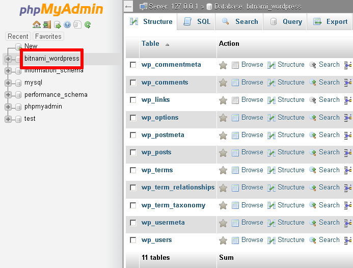
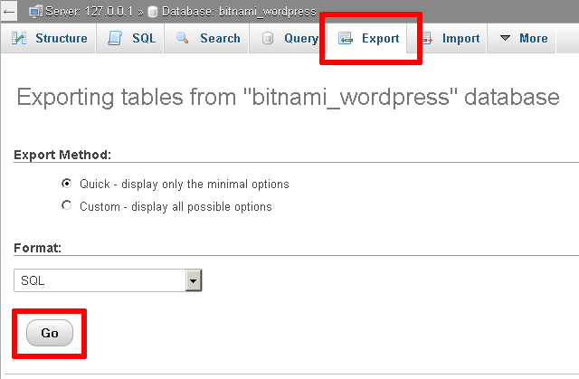
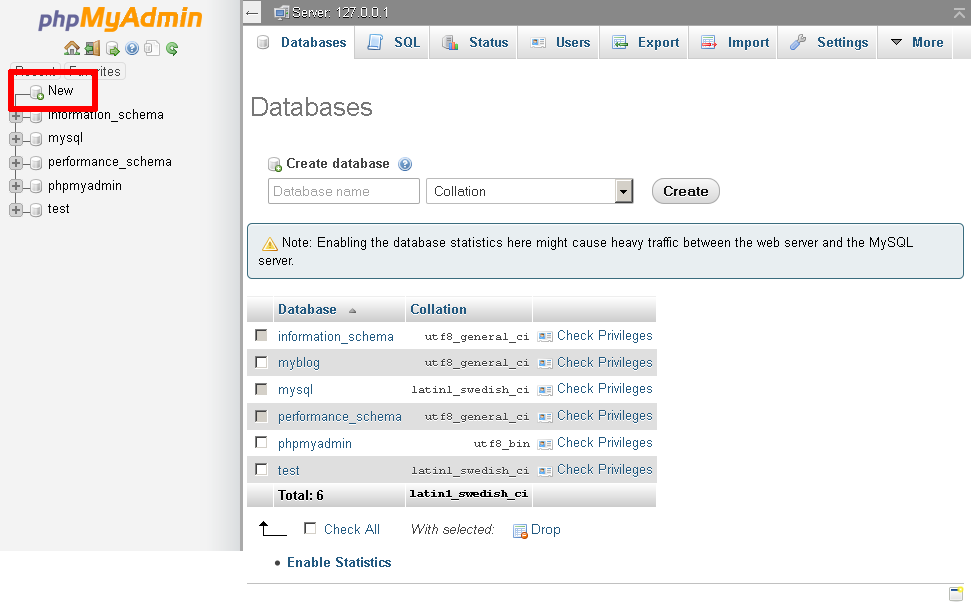
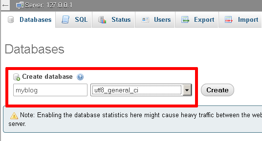
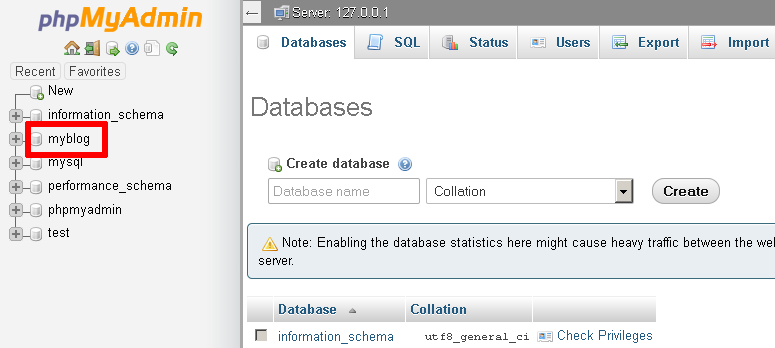
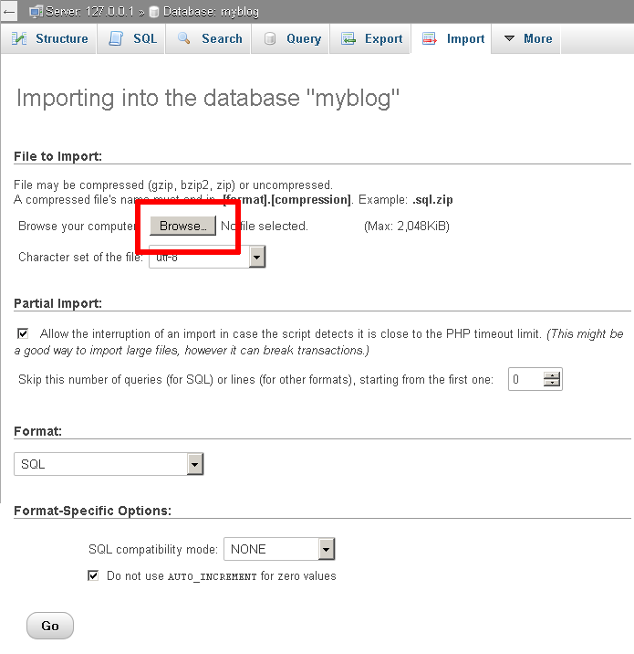
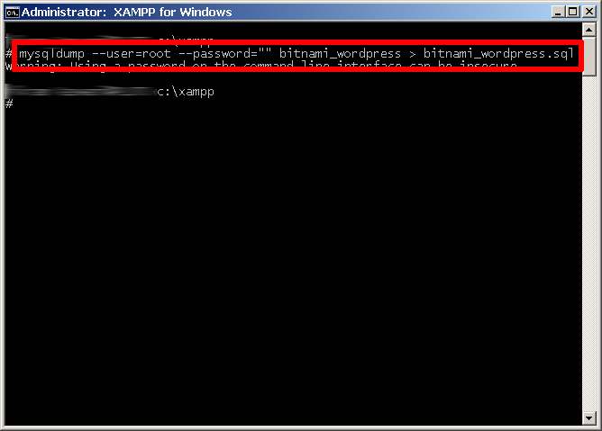
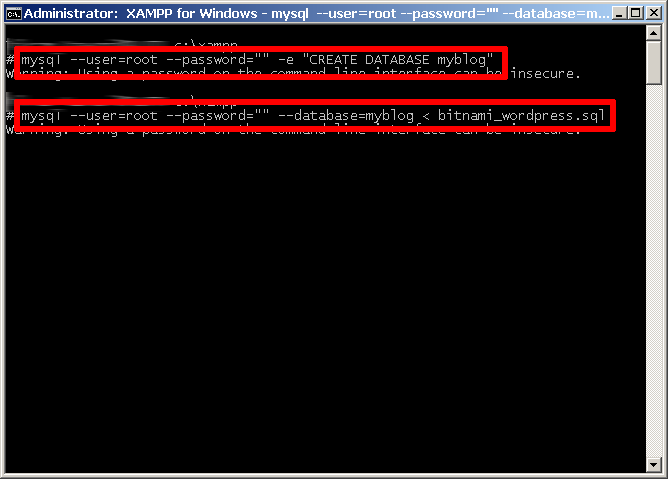

Backup and Restore MySQL/MariaDB Databases
As you use XAMPP, you might find that you need to backup or restore a MySQL or MariaDB database. There are two easy ways to do this with XAMPP: using the browser-based phpMyAdmin tool or using MySQL/MariaDB’s command-line tools. This guide describes both options.
This guide assumes that you already have a PHP application that uses a MySQL/MariaDB database deployed on XAMPP. The example application used in this guide is WordPress, although the steps outlined below will work for any application.
| Remember that you can install WordPress quickly using the Bitnami WordPress module for XAMPP. |
Using phpMyAdmin
XAMPP includes phpMyAdmin, an open-source, browser-based tool for managing MySQL/MariaDB database servers. To backup a MySQL/MariaDB database using phpMyAdmin, follow these steps:
-
Browse to http://localhost/phpMyAdmin or http://127.0.0.1/phpMyAdmin. If required, log in using your database access credentials. On a fresh XAMPP installation without any changes, you can log in as root with a blank password.
-
Select the database to be backed up from the list in the left navigation pane. In this case, we’re backing up the WordPress database, which is named bitnami_wordpress.
 -
Select the "Export" command in the top navigation bar.
-
On the resulting page, select "Quick" as the export method and "SQL" as the output format. Click "Go" to proceed.

phpMyAdmin will export the database to a text file as a series of SQL statements. Once done, the browser will prompt you to download it to the desktop. This text file is your backup, so store it safely!
At a later point, you may wish to restore the database. To restore the data to a fresh MySQL/MariaDB database using phpMyAdmin, follow these steps:
-
Browse to http://localhost/phpMyAdmin or http://127.0.0.1/phpMyAdmin. If required, log in using your database access credentials.
-
Select the "New" command in the left navigation pane.
 -
On the resulting page, enter a name for the new database (in this case, myblog). Select the collation "utf8_general_ci". Click "Create" to create the database.
Once the database has been created, it will appear in the left navigation pane.
 -
Select the new database from the left navigation pane. In the resulting page, select the "Import" command in the top navigation bar.
-
Click the "Browse…" button and select the backup file created earlier. Click "Go" to proceed.
phpMyAdmin will import the data from the backup file. Once complete, you will see a screen indicating the status of the import.

If you browse the contents of the database, you should now see your original data.
You should now update your application’s configuration and point it to your newly-created database. For example, with the Bitnami WordPress module, you will need to edit the wp-config.php file in the apps\wordpress\htdocs\ subdirectory of your XAMPP installation directory. Within this file, you will need to update the DB_NAME constant to use the new database name.
| By default, PHP (and therefore phpMyAdmin) is configured to only accept uploads up to 2 MB in size. If your database is larger than this, you need to modify the PHP configuration file to accept a larger upload size. To do this, edit the php.ini file in the php\ subdirectory of your XAMPP installation directory and increase the values of the post_max_size and upload_max_filesize variables. Save your changes and restart Apache for the changes to take effect. |
Using Command-Line Tools
MySQL and MariaDB include two command-line tools that you can use to quickly backup and restore databases. The mysqldump tool is used to export the contents of a database to a text file, while the mysql client can be used to import data from a text file into a MySQL/MariaDB database.
To backup a MySQL/MariaDB database from the command line, follow these steps:
-
Launch a new Windows command shell using the "Shell" button in the XAMPP control panel.
-
Use the command below to export the contents of the selected database. In this example, we’re backing up the WordPress database, which is named bitnami_wordpress, to a file named bitnami_wordpress.sql. This text file is your backup, so store it safely!
mysqldump --user=root --password="" bitnami_wordpress > bitnami_wordpress.sql

At a later point, you may wish to restore the database. To restore the data to a fresh MySQL/MariaDB database from the command line, follow these steps:
-
Launch a new Windows command shell using the "Shell" button in the XAMPP control panel.
-
Use the mysql client to create a new, empty database to hold your data. In this example, the new database is named myblog.
mysql --user=root --password="" -e "CREATE DATABASE myblog"
Remember to use the correct database access credentials in the command. On a fresh XAMPP installation without any changes, you can usually log in as root with a blank password.
-
Use the mysql client to import the contents of the backup file into the new database.
mysql --user=root --password="" --database=myblog < bitnami_wordpress.sql
The command-line client will now import the data from the backup file.

If you browse the contents of the database, you should now see your original data.
You should now update your application’s configuration and point it to your newly-created database. For example, with the Bitnami WordPress module, you will need to edit the wp-config.php file in the apps\wordpress\htdocs\ subdirectory of your XAMPP installation directory. Within this file, you will need to update the DB_NAME constant to use the new database name.